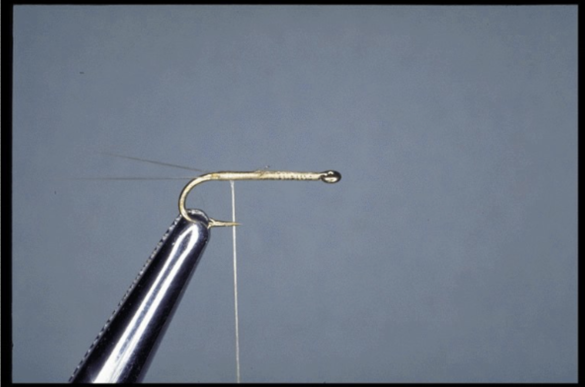

PDF containing comments along with photos can be found here.
Caption under each picture provides a brief comment.

You may copy content from this site unless it’s noted otherwise. However, borrowed content must reference this site as the source. Questions and comments about the RS2 Home Page can be sent to Frank Horvath. I’ll reply as time allows.
Return to the main page by clicking here.